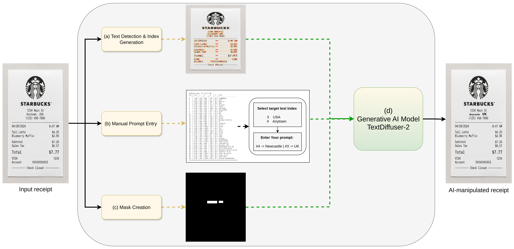
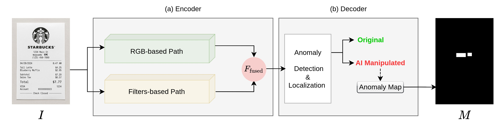
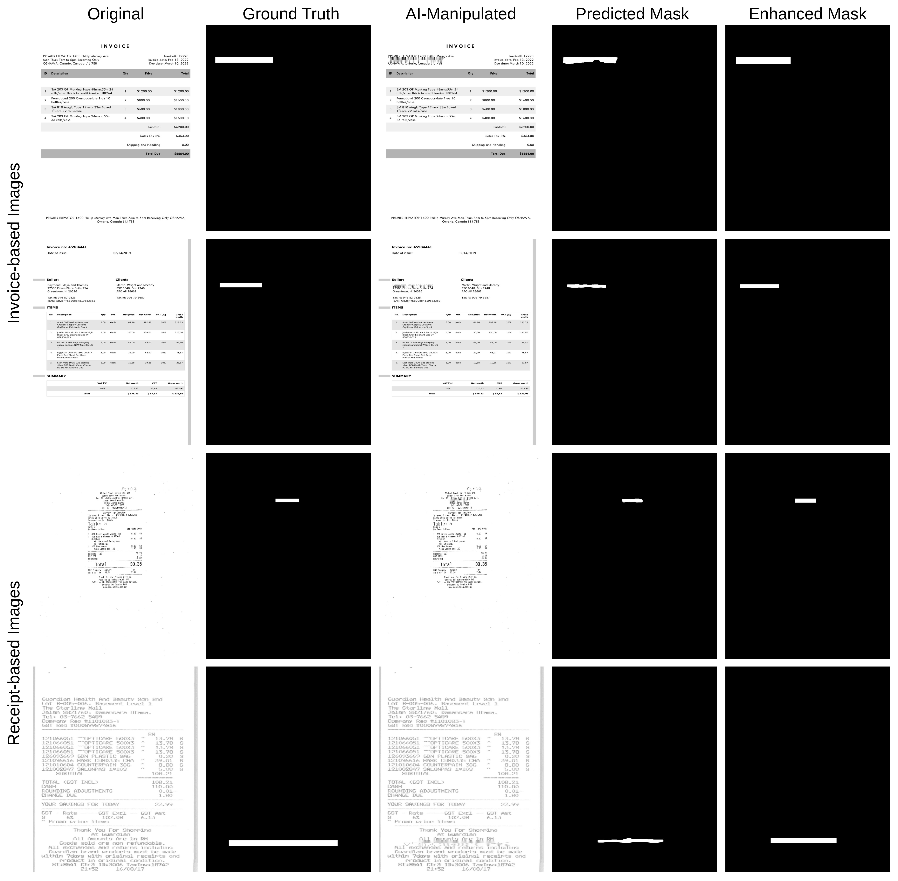

Hóa Đơn Và Biên Lai Giả Mạo Trong Kế Toán: Tác Động Nghiệp Vụ Và Giải Pháp Khắc Phục Bằng Thị Giác Máy Tính Trong Kỷ Nguyên AI Tạo Sinh (Gen-AI)
Sự bùng nổ vũ bão của Trí tuệ Nhân tạo Tạo sinh (Generative AI - Gen-AI), bao gồm các mô hình khuếch tán hình ảnh (Diffusion Models), Mạng đối nghịch tạo sinh (GANs) và các công cụ chỉnh sửa ảnh thông minh, đang tạo ra một mối đe dọa mang tính sinh tử đối với tính toàn vẹn của hệ thống kế toán và kiểm toán toàn cầu. Kẻ gian, nhân viên nội bộ bất lương hoặc các đường dây tội phạm có tổ chức giờ đây có thể tạo ra những hóa đơn, biên lai thanh toán giả mạo hoàn hảo — từ hóa đơn mua sắm tiếp khách, vé máy bay điện tử đến hóa đơn mua nguyên vật liệu trị giá hàng tỷ đồng — với độ chân thực về vết nhàu, bóng sáng, phông chữ và logo đến mức mắt thường của kiểm toán viên con người hoàn toàn không thể nhận biết.
Công trình nghiên cứu tiên phong này của Đại học Newcastle phối hợp với tập đoàn phần mềm kế toán quốc tế Sage PLC phân tích sâu sắc tác động kinh tế và cơ chế kỹ thuật của hiểm họa này, đồng thời đề xuất khung giải pháp Pháp y Hình ảnh số (Digital Image Forensics) dựa trên Thị giác Máy tính: (1) Phân tích mức độ lỗi nén (Error Level Analysis - ELA); (2) Phân tích miền tần số Wavelet nhận diện dấu vết vi mô của mô hình tạo sinh; và (3) Mạng Học sâu phân loại giả mạo tự động.
Nghiên cứu cung cấp một lộ trình thực chiến giúp các nhà phát triển phần mềm kế toán và các hãng kiểm toán tích hợp "Kính hiển vi số" vào quy trình kiểm soát nội bộ, bảo vệ quỹ tiền mặt doanh nghiệp trước làn sóng gian lận tài chính thời đại AI.
1 Bối Cảnh: Khi Mắt Thường Kiểm Toán Viên Bị "Vô Hiệu Hóa"
Trong suốt lịch sử kế toán kiểm toán truyền thống, phương thức kiểm tra chứng từ gốc (Vouching) dựa trên mắt nhìn của kiểm toán viên là bức tường lửa bảo vệ doanh nghiệp. Nếu một hóa đơn có đầy đủ chữ ký, con dấu, số tiền khớp với hợp đồng và nhìn không có dấu hiệu tẩy xóa cơ học, giao dịch sẽ được coi là hợp lệ.
Tuy nhiên, AI tạo sinh đã làm thay đổi hoàn toàn cuộc chơi. Nếu như trước đây kẻ gian dùng Photoshop ghép số thì vẫn để lại đường viền răng cưa hoặc mất cân bằng sáng, thì hiện nay các mô hình Gen-AI (như Stable Diffusion inpainting) có thể thay thế một con số trên hóa đơn mà tự động tái tạo hoàn hảo từng hạt nhiễu, sợi giấy và độ mờ quang học. Mắt thường của con người đã chính thức trở nên bất lực!
Chỉ với một chiếc điện thoại di động và các website tạo biên lai giả mạo trực tuyến tích hợp AI, bất kỳ nhân viên nào cũng có thể "vẽ" ra một hóa đơn taxi hoặc ăn uống trị giá hàng chục triệu đồng trong chưa đầy 30 giây để thanh toán khống chi phí công tác.
2 Phân Tích Tác Động Nghiệp Vụ Kế Toán & Thuế (Impact Analysis)
Bài báo của Thornton et al. chỉ rõ 3 cấp độ thiệt hại khổng lồ đối với nền kinh tế:
- Thủng lưới quỹ tiền mặt doanh nghiệp: Gian lận thanh toán công tác (T&E Expense Fraud) làm bốc hơi từ 5% đến 15% ngân sách hoạt động của các công ty đa quốc gia.
- Thất thu thuế và rủi ro hình sự: Việc sử dụng hóa đơn bất hợp pháp để trốn thuế TNDN và gian lận hoàn thuế GTGT quay vòng (VAT Carousel Fraud) khiến doanh nghiệp đối mặt với án phạt tiền tỷ và truy cứu trách nhiệm hình sự người đại diện pháp luật.
- Khủng hoảng niềm tin kiểm toán: Kiểm toán viên độc lập không thể đưa ra ý kiến trung thực và hợp lý nếu bằng chứng kiểm toán được xây dựng trên nền tảng các hóa đơn giả mạo do AI tạo sinh.
3 Khung Giải Pháp Thị Giác Máy Tính & Pháp Y Hình Ảnh (Mitigation Strategies)
Để đối phó với kẻ gian dùng công nghệ cao, giải pháp duy nhất là sử dụng các công cụ Pháp y Hình ảnh số (Digital Image Forensics) dựa trên Computer Vision:

3.1. Phân Tích Mức Độ Sai Số Nén (Error Level Analysis - ELA)
Kỹ thuật ELA khai thác tính chất suy hao của chuẩn nén ảnh JPEG. Khi một hóa đơn được lưu nhiều lần, các pixel nguyên bản đạt trạng thái cân bằng nén tối màu. Nếu một con số mới được cấy ghép vào ảnh, vùng đó có chu kỳ nén ít hơn và sẽ phát sáng với mức năng lượng chênh lệch cao khi được tái nén ở chất lượng 95%:
3.2. Phân Tích Miền Tần Số Wavelet & Dấu Vân Tay Cảm Biến (PRNU)
Mọi cảm biến camera vật lý đều để lại dấu vân tay nhiễu hạt siêu nhỏ không đồng đều (PRNU). AI tạo sinh tuy mô phỏng được hình ảnh mắt thấy nhưng hoàn toàn không thể tái tạo đúng quy luật phân bố năng lượng tần số cao của cảm biến quang học:

3.3. Mô Hình Học Sâu Bắt Giả Mạo (Deep Learning Forgery Classifier)
Hệ thống tích hợp mạng ResNet và Vision Transformer để tự động trích xuất các đặc trưng vi mô của điểm ảnh, xuất ra điểm số rủi ro gian lận (Fraud Risk Score) từ 0% đến 100%:

4 Quy Trình Kiểm Soát Nội Bộ Mới Cho Doanh Nghiệp
Thay vì để kế toán viên thanh toán "mù", doanh nghiệp cần thiết lập Cổng sàng lọc Pháp y AI tự động:
- Thu thập: Nhân viên tải ảnh hóa đơn chi phí lên hệ thống phần mềm kế toán qua App di động.
- Quét Pháp y tự động: Mô-đun Computer Vision lập tức chạy kiểm tra EXIF Metadata, thuật toán ELA và phân tích miền tần số trong 1,5 giây.
- Phân luồng: Nếu điểm rủi ro < 15%, hóa đơn được tự động chuyển sang luồng thanh toán thông thường.
- Khóa cảnh báo: Nếu điểm rủi ro ≥ 15%, hệ thống lập tức khóa lệnh thanh toán, đồng thời gửi thông báo đỏ đến Kiểm toán nội bộ kèm ảnh nhiệt định vị chính xác vị trí con số bị làm giả!
- Câu hỏi 1 (Tình huống đạo đức thực tế): Một nhân viên kinh doanh kỳ cựu mang về doanh thu hàng chục tỷ cho công ty nhưng bị phát hiện dùng AI tạo giả hóa đơn ăn tối 5 triệu đồng để thanh toán chi phí tiếp khách (với lý do quán ăn bình dân không xuất được hóa đơn đỏ). Nếu là Trưởng phòng Kiểm soát nội bộ, bạn sẽ xử lý tình huống này như thế nào?
- Câu hỏi 2 (Pháp lý kiểm toán): Theo Chuẩn mực Kiểm toán Quốc tế (ISA 240) và Chuẩn mực Kiểm toán Việt Nam (VSA 240) về trách nhiệm của kiểm toán viên liên quan đến gian lận, nếu kiểm toán viên không sử dụng các công cụ công nghệ phân tích ảnh số và bỏ sót các hóa đơn giả mạo do Gen-AI tạo ra, kiểm toán viên có bị coi là thiếu sự thận trọng nghề nghiệp đúng mức (Professional Skepticism) hay không?